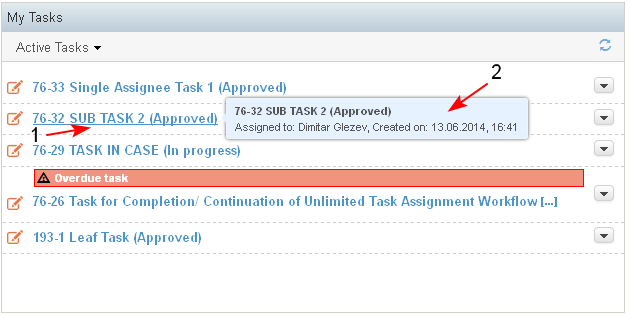
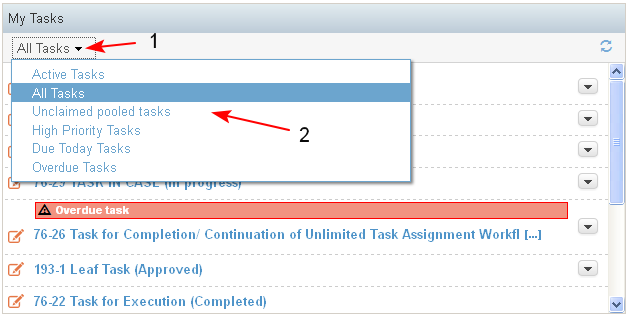
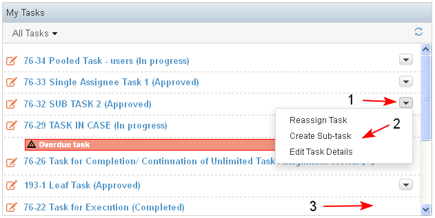
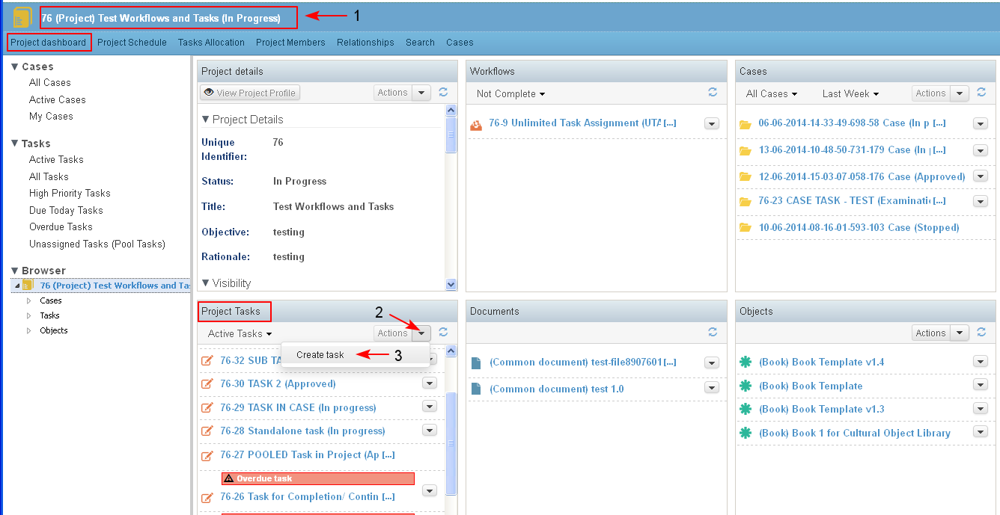

The use case describes the requirements to the content to be displayed on the dashlet, requirements on filtering tasks and actions on tasks.
The Tasks dashlet is context dependent and the content displayed on it depends on whether the dashlet is in the Personal, Project or Case dashboard.
- On the Personal dashboard the Task dashlet displays only the tasks that are assigned to the specific user.
- On the Project Dahsboard the Task dashlet displays all the tasks assigned to the project resources of this project.
- On the Case dashboard the Tasks dashlet displays the tasks which are part of the case.
- The tasks in the dashlet are sorted by default by date of creation and the latest ones are on the top. For each task in the Task dashlet is diplayed: Task ID, Task Name, Task Type (optional), Task Status. They all are a link (1) to the corresponding task landing page.
- The tool tip (2) of each task displays more information about the task (Assigned to, Created on).

- There is a filter in the dashlet which displays:
- Active Tasks - all tasks which are not in an end state (Completed or Cancelled). This value of the filter is set by default.
- All Tasks (for the current user, in the project or in the case)
- Unclaimed Pooled Tasks - active unclaimed tasks for which the current user is assignee (and may claim them)
- High Priority Tasks - Active tasks, which are with High Priority
- Due Today Tasks - all tasks for which the due date is today and are still not completed
- Overdue Tasks - task for which the end date is before today and the tasks are still not completed
- Active Tasks - all tasks which are not in an end state (Completed or Cancelled). This value of the filter is set by default.

- Next to each task in the dashlet there is a list with available Actions on the task (1), which are restricted by user's role in the Project and Case. In general the actions include: Edit Task Details, Create Task, Reassign Task, Stop Task (2).
- No actions are available for completed tasks (3).

- From the Project Tasks dashlet in the Project dashboard (1) and in the Case dashboard the user could start a new task selecting the action from the list (2-3).
The action is available for users with corresponding permissions.
